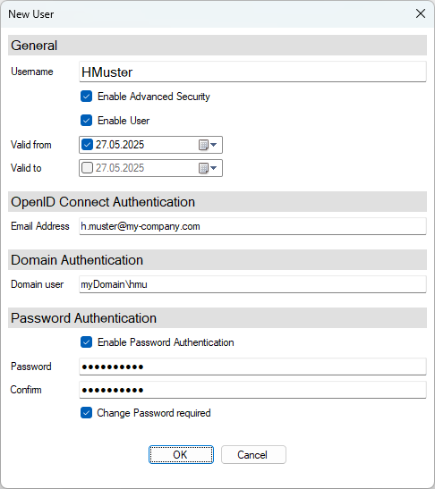
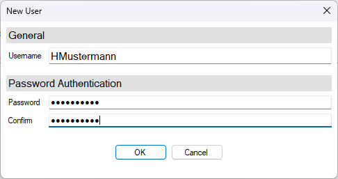
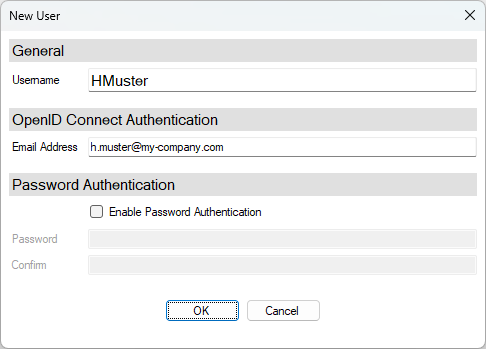

New User / Edit User
Dieser Dialog dient zum Erstellen und Bearbeiten eines Benutzers im Authentication and Authorisation Tool
Beim Erstellen eines neuen Benutzers (New User) muss der Username angegeben werden.
Beim Bearbeiten eines bestehenden Benutzers (Edit User) können außer dem Username alle Einstellungen geändert werden.
Das folgende Bild zeigt den Dialog mit allen möglichen Einstellungen:

Je nach Konfiguration des Authentication-Service kann der Umfang jedoch stark eingeschränkt sein. 2 Beispiele:
Einfache Passwort-Authentifizierung

OpenID-Connect-Authentifizierung

Im folgenden sind alle Einstellungen beschrieben.
General
Dieser Bereich umfasst allgemeine Einstellungen für den Benutzer.
Username
Name des Benutzers. Dieser muss eindeutig sein.
Der Name muss bei der Erstellung eines neuen Benutzers vergeben werden. Beim Bearbeiten eines Benutzers kann dieses Feld nicht mehr bearbeitet werden.
Checkbox Enable Advanced Security
Diese Checkbox wird nur angeboten, wenn Advanced Security im Authentication-Service aktiviert ist.
Ist die Checkbox gesetzt, dann werden für diesen Benutzer die folgenden Funktionen freigeschaltet:
- Es gelten für die Passwort Authentication erweiterte Sicherheitsanforderungen, welche am Authentication Service definiert sind.
- Die Checkbox Change Password required kann gesetzt werden.
- Über die Checkbox Enable User kann ein Benutzer aktiviert / deaktiviert werden
- Mit Valid from und/oder Valid to kann die Gültigkeit des Benutzers eingeschränkt werden.
Note
Die erweiterten Sicherheitseinstellungen dürfen typischer Weise nicht für den Benutzer aktiviert werden, der als Standardbenutzer für den Login an Applikationen vorgesehen ist (Standardbezeichnung anonymous), da dessen Passwort zeitlich unbegrenzt gültig sein muss.
Checkbox Enable User
Nur verfügbar, wenn Advanced Security aktiv ist.
Wenn die Checkbox gesetzt ist, ist der Benutzerzugang freigeschaltet. Wird der Haken entfernt ist der Benutzer für Anmeldungen gesperrt.
Valid from / Valid to
Nur verfügbar, wenn Advanced Security aktiv ist.
Hier kann angegeben werden, in welchem Zeitraum der Benutzer aktiv ist. Mit dem Setzen der Checkbox kann jeweils ein Datum angegeben werden und es erfolgt bei der Anmeldung eine Prüfung. Außerhalb des Zeitraums ist der Benutzer für Anmeldungen gesperrt.
OpenID Connect Authentication
Dieser Bereich ist nur sichtbar wenn im Authentication-Service OpenID Connect konfiguriert ist. Es müssen der Identity-Provider und die Client-ID spezifiziert sein.
Email Address
Hier wird die Identität des Benutzers im entsprechenden Identity-Provider definiert. In der Regel handelt es sich dabei um die Email-Adresse des Benutzers. Im Authentication-Service kann über die Einstellung Claim auch ein abweichender Wert definiert werden.
Note
Eine Änderung des Claim hat KEINE Auswirkung auf die gespeicherten Indentitäten. Diese müssen ggf. nachgearbeitet werden.
Die Beschriftung dieses Feldes kann im Authentication-Service über die Einstellung Label for Claim gändert werden.
Die Identität muss eindeutig sein - sie kann nur einem Benutzer zugeordnet werden.
Domain Authentication
Dieser Bereich ist nur sichtbar wenn im Authentication-Service die Domain-Authentication konfiguriert ist. Es müssen die Domain und der Domain Controller spezifiziert sein.
Domain user
In diesem Feld kann der Benutzer mit einem Domänenbenutzer verknüpft werden. Das zu verwendende Format ist Domäne\Benutzer. Wird eine Applikation auf einem Windows System gestartet, an dem der Domänenbenutzer angemeldet ist, so wird automatisch der zugeordnete Benutzer angemeldet.
Der Domänenbenutzer muss eindeutig sein - er kann nur einem Benutzer zugeordnet werden.
Password Authentication
In diesem Bereich wird das Passwort des Benutzers angegeben.
Checkbox Enable Password Authentication
Nur verfügbar, wenn OpenID Connect Authentication aktiviert ist.
Wird dem Benutzer eine Identität für OpenID Connect zugewiesen, dann kann durch das Entfernen des Hakens Passwort-Authentifizierung deaktiviert werden. Das stellt sicher, dass eine Sperre des Benutzers im Identity-Provider nicht durch einen Fallback auf die Passwort-Authentifizierung umgangen werden kann.
Durch setzen des Hakens kann die Passwort-Authentifizierung jederzeit wieder reaktiviert werden. Das (alte) Passwort bleibt im Hintergrund gespeichert.
Wird am Authentication-Service die Konfiguration für die OpenID Connect Authentication entfernt, dann hat diese Checkbox keine Funktion mehr. In diesem Fall ist die Passwort-Authentifizierung wieder mit den (alten) Passworten aktiv.
Password / Confirm
Passwort des Benutzers und die Passwortwiederholung.
Diese Felder müssen nur angegeben werden, wenn das Passwort neu festgelegt oder geändert wurde.
Checkbox Change password required:
Nur verfügbar, wenn Advanced Security aktiv ist.
Wenn die Checkbox gesetzt ist, muss der Benutzer bei der ersten/nächsten Anmeldung sein Passwort ändern.